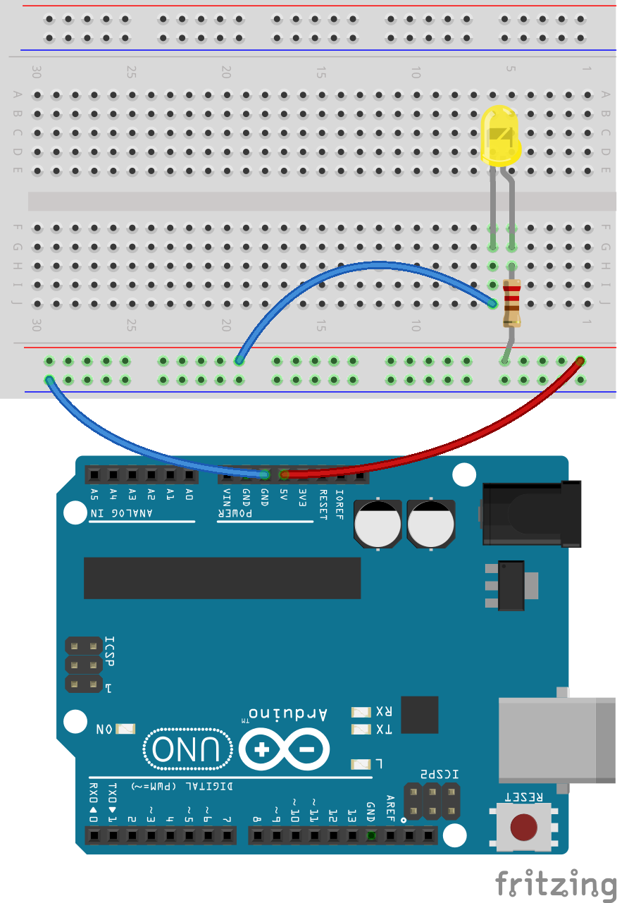

Connect the components according to the following diagram:

Congratulations, you have built your first ever electronic circuit! :)
Why do we need to add a resistor to the circuit? What could happen if we skipped the resistor, and connected the LED directly to the power output of the Arduino board?